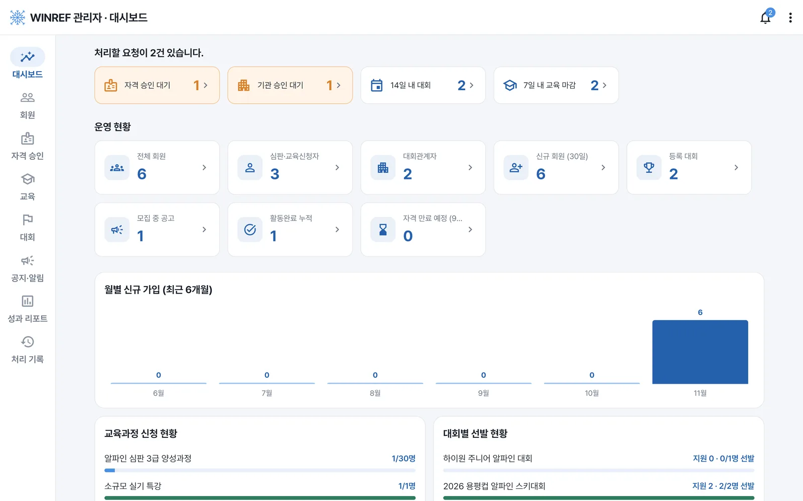
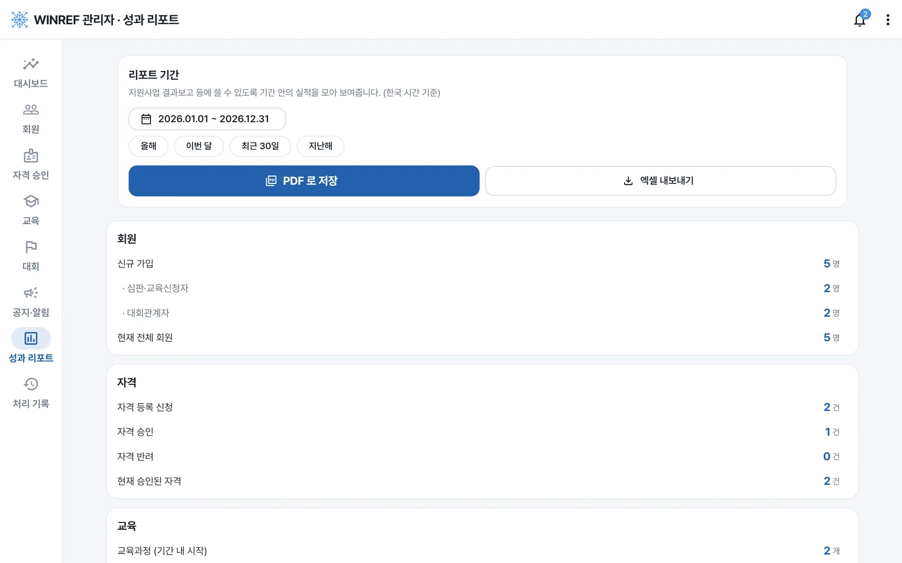
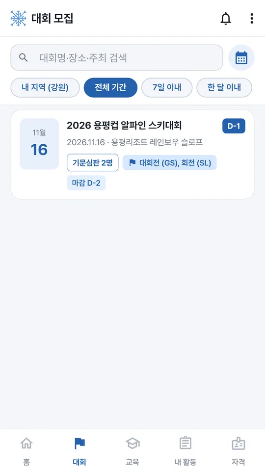
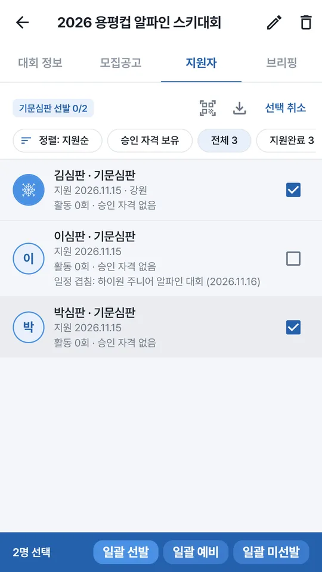
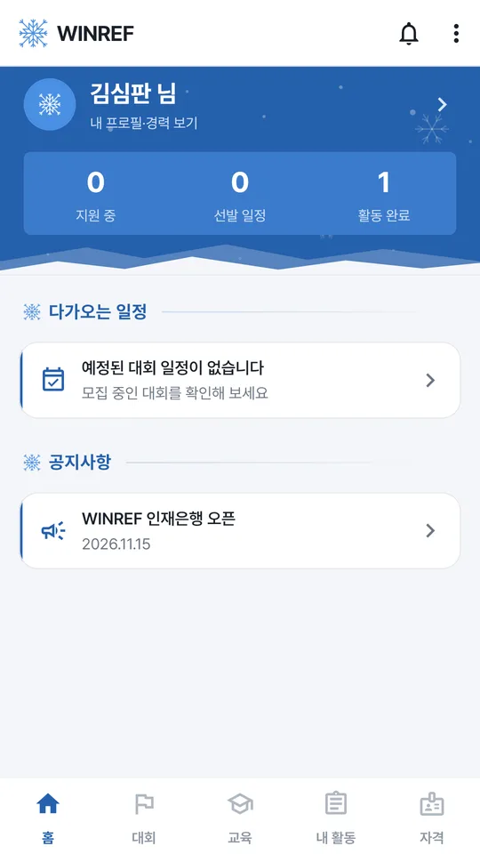
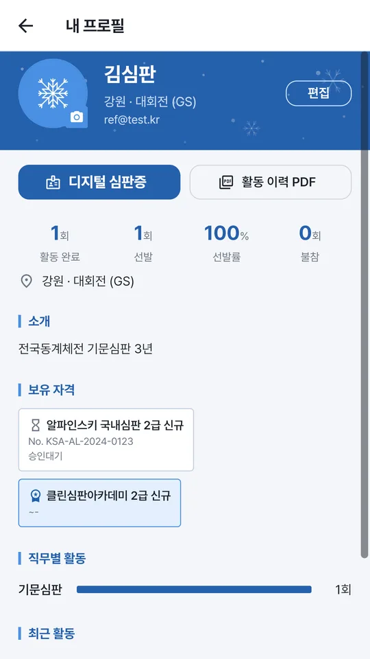

Mission client · Freelance rémunéréeClient project · Paid freelance
WINREF Academy forme et place des officiels de course (juges de porte, juges de départ…) pour les compétitions de ski alpin en Corée. Les inscriptions, les sélections et le suivi des qualifications se faisaient à la main. J'ai livré une application Android et une console d'administration web, avec la base de données, les droits d'accès, les notifications automatiques et les rapports d'activité.
WINREF Academy trains and assigns race officials (gate judges, start judges…) for alpine-ski competitions in Korea. Applications, selections and qualification tracking were handled by hand. I delivered an Android app and a web admin console, with the database, access rights, automatic notifications and activity reports.
Recherche de compétitions et calendrier, candidature en un clic, inscription aux formations, dépôt des qualifications, historique d'activité exportable en PDF, carte d'officiel numérique.
Competition search and calendar, one-tap application, training sign-up, qualification upload, activity history exported to PDF, digital official card.
Création de compétitions et d'annonces par poste, sélection groupée des candidats avec alerte de conflit de dates, export Excel, pointage par QR code, évaluation après la course.
Competition and per-role recruitment posts, bulk candidate selection with date-clash warnings, Excel export, QR-code check-in, post-race evaluation.
Tableau de bord d'indicateurs, rapport d'activité par période (PDF et Excel) pour les bilans de subventions, validation des qualifications et des organismes, journal d'audit.
KPI dashboard, activity report by period (PDF and Excel) for grant reporting, qualification and organisation approval, audit log.
Les indicateurs sont calculés directement dans PostgreSQL : membres par profil, inscrits par formation, candidats et sélectionnés par compétition, qualifications qui expirent dans 90 jours, inscriptions mensuelles. Le rapport par période agrège l'activité (sélections, présences, certificats) pour que le client puisse rendre compte à ses financeurs sans retraiter les données à la main.
KPIs are computed directly in PostgreSQL: members by role, sign-ups per course, applicants and selected officials per competition, qualifications expiring within 90 days, monthly sign-ups. The period report aggregates activity (selections, attendance, certificates) so the client can report to funders without reworking data by hand.






Interface en coréen pour les utilisateurs du client. Captures issues des tests automatisés, données fictives.
Korean interface for the client's users. Screenshots from the automated tests, fictitious data.
Le code a été écrit avec Claude (assistant IA), à partir du cahier des charges du client. Mon rôle : découper le besoin, décider du modèle de données et des règles d'accès, relire, tester et livrer.
The code was written with Claude (an AI assistant) from the client's specification. My role: break down the need, decide the data model and access rules, review, test and deliver.
Droits d'accès au niveau des lignes (RLS) testés automatiquement, scénarios de bout en bout dans un vrai navigateur sur une base locale, builds Android et web à chaque mise à jour du code.
Row-level access rights (RLS) tested automatically, end-to-end scenarios in a real browser against a local database, Android and web builds on every code push.
Hors périmètre (cahier des charges) : vidéo, messagerie instantanée, paiement. Les notifications KakaoTalk sont prévues en phase 2.
Out of scope (per specification): video, instant messaging, payments. KakaoTalk notifications are planned for phase 2.